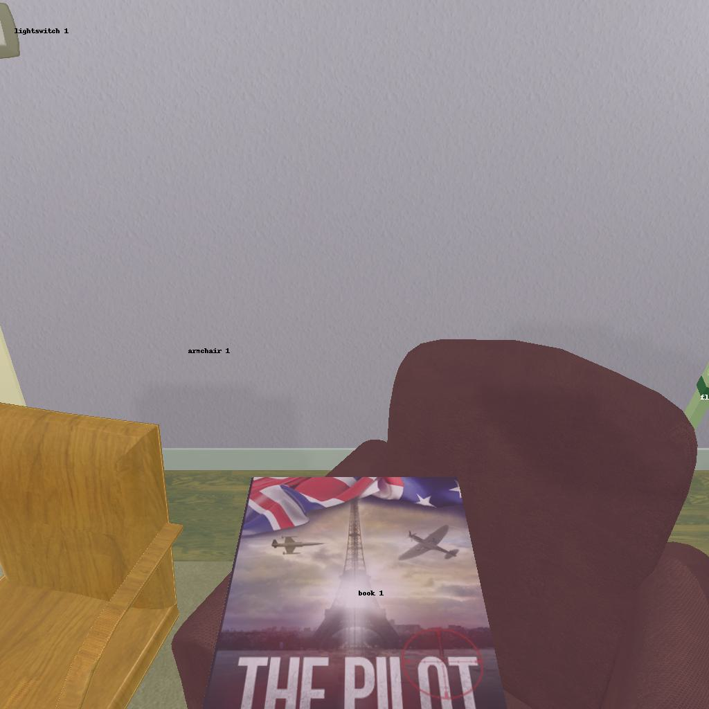

---------------------------------------------------------task: 5---------------------------------------------------------
--------------------------------------------------------------------------------------------------------------------------------------------------------------------
--------------------------------------------------------------------------------------------------------------------------------------------------------------------
Step:--------------------------------------------------------------------------18-------------------------------------------------------------------------------
----------------------------------------
VLM Prompt:
Image1:
Image2:
**Instruction**
1. Analyze the provided image to identify all visible household objects, focusing on those relevant to the task description "put some book on armchair."
2. Use the analysis of the image and the task hint "The agent must find an object of the desired type, pick it up, find the correct location to place it, and put it down there." to answer the question: what is the most reasonable action in the choices for the task description "put some book on armchair"?
4. Decide and write the answer using the template: The answer is: (i): , where i is the real number. If there is no desired object in the image, search every place based on **Initial Observation** to find the object. And if no one is exactly correct, choose a similar answer.
**Initial Observation**
You are in the middle of a room. Looking quickly around you, you can see armchair (1), sofa (1), coffeetable (1), drawer (1-4), sidetable (1-3), dresser (1)
**Answer Choices**
(1): go to sofa 1
(2): go to coffeetable 1
(3): go to drawer 1
(4): go to sidetable 1
(5): go to dresser 1
(6): go to drawer 2
(7): go to drawer 3
(8): go to drawer 4
(9): go to sidetable 2
(10): go to sidetable 3
(11): put book 1 in/on armchair 1
(12): use floorlamp 1
(13): examine armchair 1
**Answer**
Let's think step by step by following the instructions.
----------------------------------------
----------------------------------------
Original Response:
The task description is "put some book on armchair." In the image, we can see a book labeled "book 1" already on armchair 1, which suggests that the task has already been completed. However, let's assume that we need to put another book on the armchair as per the task description.
Based on the **Initial Observation**, there are several possible locations where more books might be found, such as drawers, sidetables, and a dresser. Since the instruction is to find an object of the desired type (book) and the image does not show any other books, we would need to search other locations.
Among the answer choices, going to the sofa, coffeetable, or using the floorlamp would not help us find a book. Examining the armchair would not yield a new book either, as we can already see the book on it. Therefore, the reasonable actions would be to go to the locations where books are likely to be found: the drawers, sidetables, or dresser.
Since no specific location is hinted at being more likely to contain a book, we must choose among the options given that correspond to these locations.
The answer is: (3): go to drawer 1, as it is the first option listed that could reasonably contain a book. If no book is found there, then we would proceed to search the other locations mentioned (drawers 2, 3, 4, sidetables 2, 3, and dresser 1).
----------------------------------------
----------------------------------------
>>> Refine Original VLM Response and Get Pure Action: go to drawer 1, as it is the first option listed that could reasonably contain a book
----------------------------------------
-----------------------------------------------------------------
Running time: 11.247359991073608 seconds
Total Money: 2.375950000000001
-----------------------------------------------------------------
-----------------------------------------------------------------
Text Observation:Nothing happens.
-----------------------------------------------------------------
UNSUCCEED